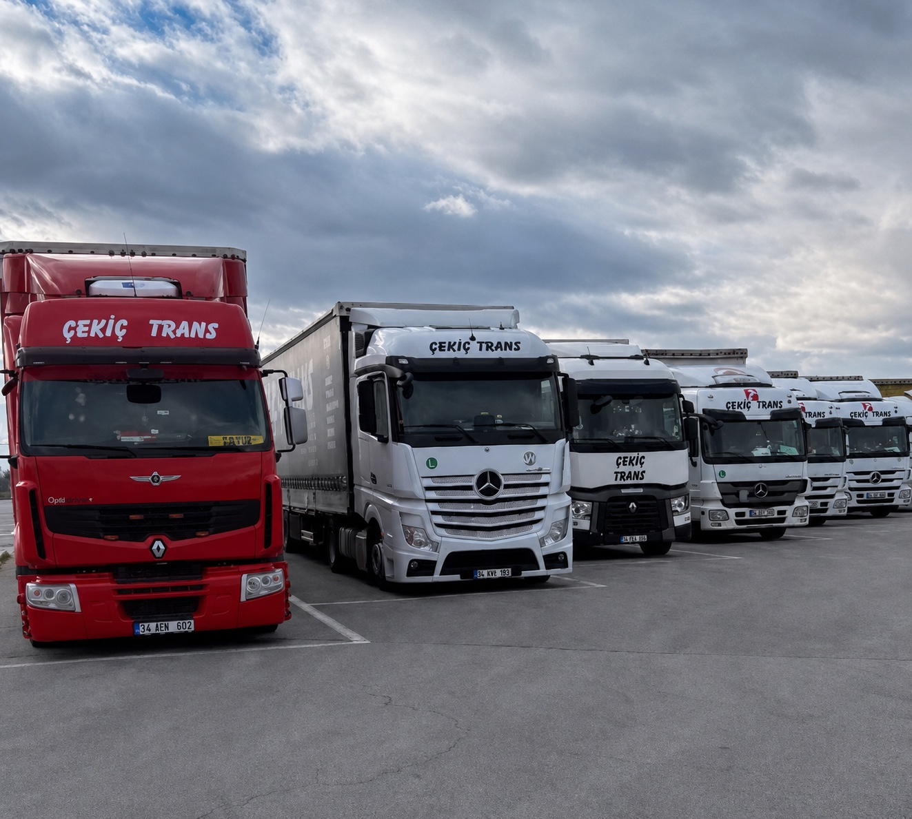
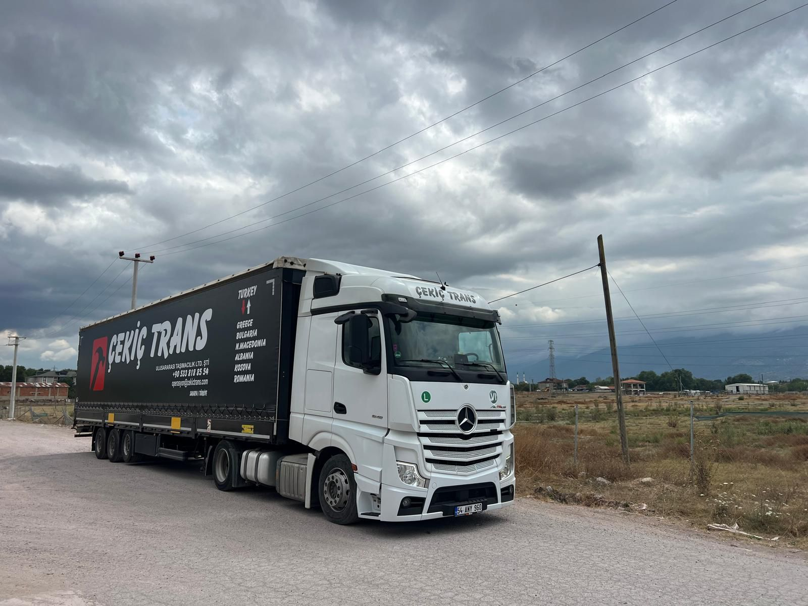

Uluslararası Karayolu Taşımacılığı
Çekiç Trans.
01 — Türkiye'den Balkanlara, yıllardır aynı sözle: yük yerinde olur.
[01/05]
Aşağı kaydır
02 / Hakkımızda
— EST. AİLE FİRMASI
Bir tırın 2.400 kilometresinde ne olup bittiğini bilmek için, o yolda yıllar geçirmek lazım.
Çekiç Trans, yıllardır Türkiye sınırlarından çıkıp Kapıkule, İpsala ve Hamzabeyli'den Balkan koridoruna yol alan bir aile firmasıdır. Bu işi babadan değil, sınırdan, yağmurdan, gece üçte bir mola yerinden öğreniriz.
Bir yükün makbuzu kâğıda yazılır; ama varış noktasında bekleyen fabrikanın hattı, tezgâhın siparişi, müşterinin sözü için iş çok daha ağırdır. Onun için yola çıkmadan önce filo bakımdan çıkmadan kontak çevrilmez, gümrük dosyası eksik teslim alınmaz, akorsiyon kapatılmadan vites takılmaz.
Yunanistan, Bulgaristan, Kuzey Makedonya, Arnavutluk, Kosova ve Romanya'ya komple ve parsiyel yük taşıyoruz. Hatlarımızı yıllar içinde adım adım kurduk; aynı sınır kapısından aynı tırlarla, aynı isimlerle geçiyoruz. Bu işte güven yıllarla biriken bir şey.
— Çekiç Trans, yolda hâlâ aynı söze sadık.
03 / Rotalar
— BALKAN KORİDORU
Bir hat, altı ülke.
Her şoför aynı yolu yıllardır biliyor.
- GR Yunanistan Selanik · Atina · Pire 620–1.520 km
- BG Bulgaristan Sofya · Plovdiv · Burgaz 280–550 km
- MK Kuzey Makedonya Üsküp · Bitola 880–1.020 km
- AL Arnavutluk Tiran · Durrës 1.080–1.190 km
- XK Kosova Priştine · Prizren 940–1.010 km
- RO Romanya Bükreş · Köstence · Timişoara 720–1.460 km
04 / Hizmetler
— FAALİYET ALANI
Kâğıt üzerinde lojistik. Yolda, bir tek söz.
Komple TIR'dan parsiyel parti yüke kadar; karayolu odaklı, gümrük süreciyle uçtan uca yürütülen bir taşımacılık.
Komple Yük (FTL)
Tek müşteri, tek tır, tek hat. Yükleme noktasından varış adresine kadar transit; ara aktarmasız, sızıntısız, kayıtlı. Tenteli ve kapalı kasa seçeneklerimizle hassasiyet düzeyi yüke göre belirlenir.
Parsiyel Yük (LTL)
Tek tır'a yetmeyen partiler. Düzenli Balkan hatlarımızla maliyeti paylaşır, transit süreyi şaşırtmadan teslimat yaparız.
Gümrük Operasyonu
Belge hazırlığından TIR karnesi kapanışına; sınırda saatlerin değil dakikaların önemli olduğu süreci dosyayla yönetiyoruz.
Kapıdan Kapıya
Aktarma değil, tek elden yürütülen teslimat. Yükleme adresinden boşaltma rampasına kadar sorumluluk tek noktada.
Proje & Endüstriyel Yük
Otomotiv, beyaz eşya, makine, gıda ve tekstil sektörlerine özel ekipman ve istif planı. Hassas yüklerde ekip bilgilendirmesi yüklemeden önce yapılır.
7/24 Takip
Yola çıkan tır, çıkış-sınır-varış üçgeninde anlık raporlanır. Müşterinin telefonu açmadan haberi olur.
05 / Filo
— TENTELİ & KAPALI KASA
On'larca tır, tek standart.
Filomuz Mercedes Actros ve Renault çekicilerden oluşur; tenteli ve kapalı kasa dorseler ile farklı yük profillerini karşılıyoruz. Her araç planlı bakımdan geçer, sefer öncesi son kontrol kâğıt üzerinde değil yolda yapılır.
- ÇekiciMercedes Actros · Renault T
- DorseTenteli · Kapalı kasa
- Kapasite40 ton'a kadar
- İzlemeGPS · 7/24 operasyon

06 / Neden Çekiç Trans
— BİZ HABERDARIZ
Sınırda saat kazanmak için yıllar harcanır.
Sınır kapısı deneyimi
Kapıkule, İpsala, Hamzabeyli, Dereköy, Promachonas. Hangi kapıda hangi saatte ne olduğunu bilen şoförler ve operasyon ekibi.
Modern filo, planlı bakım
Tır filomuz yaş ve kilometre dağılımı dengelenmiş bir kompozisyon. Bakım çıkışı olmadan yola çıkmayan tek standart.
Yıllar süren rota bilgisi
Aynı tırlarla aynı yolu yıllardır gidiyoruz. Mola yerlerinden polis bandına, yağmurda yol değiştirmeye kadar haritada olmayan bilgi var elimizde.
CMR sigortalı, kayıtlı
Her sefer CMR konvansiyonu çerçevesinde sigortalanır; yükün durumu çıkış, transit ve teslimde fotoğrafla belgelenir.
Şeffaf fiyat, sürpriz yok
Teklif yazılır, üzerinde mutabık kalınır, fatura aynısı çıkar. Ek bedel ancak müşteri bilgisi ve onayıyla mümkün.
Aile firması sorumluluğu
Bu işin her aşamasında bir isim, bir telefon, bir muhatap vardır. Çağrı merkezi değil; bizzat görüşürsünüz.
07 / Süreç
— TEKLİFTEN TESLİME
Beş adım. Beş onay.
-
01
Teklif
Yük türü, hacim, hat ve teslim tarihi; netleştirilen bilgilerden kâğıt üzerinde yazılı teklif çıkar.
-
02
Belge & Gümrük
Fatura, çeki listesi, ATR/EUR.1 düzenlemesi; sınır beyanlarının hazır olarak hazırlanması.
-
03
Yükleme
Adres ve saat üzerinde mutabık kalınır. Yükleme sırasında ekipman ve istif kontrolü yapılır.
-
04
Transit
Yola çıkış, sınır geçişi ve varış üçgeninde anlık takip. Müşteriye düzenli durum raporu.
-
05
Teslimat
Boşaltma adresinde teslim. CMR imzası, fotoğraf ve fatura kapanışı.
08 / İletişim
— TEKLİF / OPERASYON
Bir yükünüz mü var?
Konuşalım.
Hattınızı, yük türünüzü ve tarihinizi söyleyin; aynı gün net bir teklif çıkaralım. Sınır kapısında sürpriz, hatta hesapta sürpriz yok.